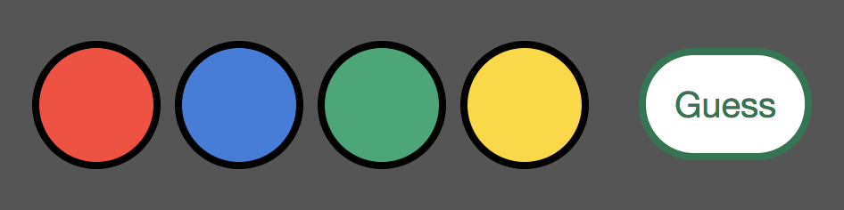

I build technology solutions
-
I founded
Neighborland
to empower people to shape the development of their neighborhoods.
Our software is the only solution designed for planners to
collaborate with their stakeholders in an accessible, participatory,
and equitable way. Over 3 million people have participated on
Neighborland, and our partners’ projects have yielded over $3
billion in social and economic impact.
-
I help
Designer Fund
attract and connect the world's best designers with top
technology companies.
-
I helped
Bright Funds
build a platform for charitable giving and volunteering.
-
I led development of an ERP system for
Nester Hosiery
so they could make the world's best wool socks more efficiently.
My team helped the company manage manufacturing of over 5000 items
and grow 20% annually for over 8 years.
You should
buy some socks.
I contribute to open source software
-
gemdiff
is a command-line tool to find source code for ruby gems.
You can compare source code differences between the current version of a gem
in your bundle and the latest version of the gem. gemdiff connects
gem version management (rubygems + bundler) with source code (GitHub).
-
rgeo
is a geospatial data library for ruby. It wraps the GEOS and Proj C libraries
and provides spatial types such as point, linestring, and polygon.
-
activerecord-postgis-adapter
is the PostGIS ActiveRecord adapter. Use it to connect ActiveRecord models
to your PostGIS database, with all the geometry type methods from rgeo.
-
haml
is the HTML Abstraction Markup Language.
-
cache_rocket
improves fragment caching efficiency in Rails. CacheRocket allows caching
more generic html fragments and allowing the contents of the cached fragments to be replaced with dynamic content.
-
pres
provides simple Rails presenter modules and classes.
-
sluggi
is a friendly_id-inspired slugging library for ActiveRecord models.
Use it to build nice-looking URLs. It provides basic slugs, slug history,
and the ability to define multiple slug candidates.
-
scopy
provides common ActiveRecord model scopes for common columns including
created_at and name.
-
resque_solo
ensures unique jobs in Resque.
-
anchored
auto-links URLs in HTML text using ruby.
-
rgeo-geojson
provides GeoJSON serialization support to RGeo objects.
-
rgeo-activerecord
provides RGeo ActiveRecord extensions, used by the PostGIS, MySql, and
Spatialite database adapters.
-
phonely_feud
is a weekend prototype I built for the first National Day
of Civic Hacking. It allows the anyone to lookup a suspicious phone
number and answer "Is this phone number a scam?"
Be a winner
-
I built
a web app
of the classic Mastermind board game using React, ES6, and webpack.
Play it:

See the possibilities